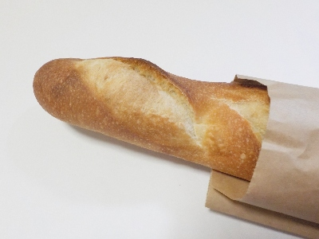
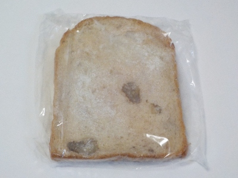
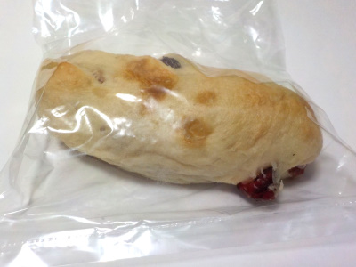
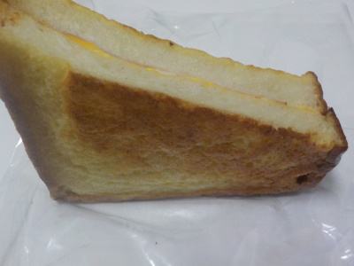
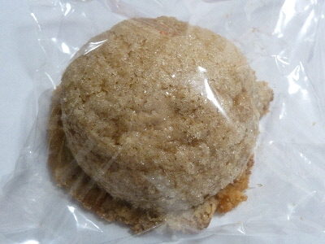
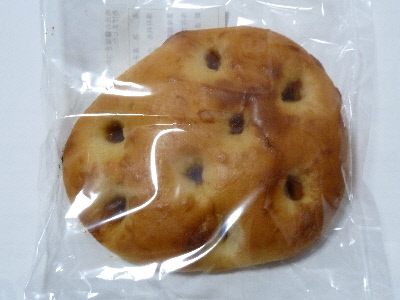
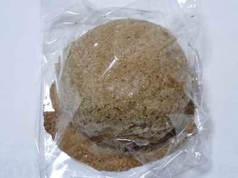
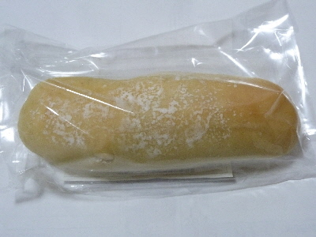
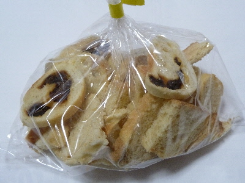

ルバーブのバタール。
2025/08/11

パンは美味しいなー。パン屋でパンを買うときは菓子パンや調理パンよりシンプルなパンがいいなと最近思ってます。
外は焼き色がしっかりありますが、パリパリではないです。中はふっくらで弾力がありました。パン自体の塩味だけで美味しく食べれました。
価格は税込み320円でした。
島根県出雲市浜町1665番地
2025/08/11

パンは美味しいなー。パン屋でパンを買うときは菓子パンや調理パンよりシンプルなパンがいいなと最近思ってます。
外は焼き色がしっかりありますが、パリパリではないです。中はふっくらで弾力がありました。パン自体の塩味だけで美味しく食べれました。
価格は税込み320円でした。
2024/05/04

上側はくるみ食パンです。
下側がフレンチトーストになっていました。砂糖がシミシミで甘くて美味しかったです。食パンですが、「おやつ」って感じがしました。
2023/05/20

クランベリーのドライフルーツが美味しかったです。クリームも甘くておいしかった。
白パンがシンプルな小麦味だったので、具材の味が引き立っていました。
2019/09/15
ルバーブで玉子とハムのトーストサンドを買いました。

具が少なそうに見えますが、中にちゃんと入ってました。
味付けがしっかりしてて、玉子が美味しかったです。
食パン自体も美味しかった。
次は食パンを買いたいと思いました。でもトーストサンドのほうが料理しなくていいから楽でいいかな。
2018/01/07
羽根がカリカリのクッキーなメロンパンです。

黒糖メロンですがシナモン味が効いてたので、シナモンメロンパンな気分がしました。
天然酵母パンらしく、ずっしりした感じでちょっとモチモチしていました。
ここのお店はモチモチのパンが多い気がするんですが、メロンパンはそれらよりはふわっとしてるかな。
2016/04/26
天然酵母パン ルバーブさんです。
住所が
島根県出雲市浜町1665番地です。
ホームページもあります。
http://rhubarb-bakery.com/
色々買いました。

醤油パンです。

黒糖メロンパン。

ぶどうぱん。

色々なパンが入ったラスクです。
パン自体が美味しいですね。
味わい深いので、ゆっくり噛んでよく味わっていただきました。
また行こう。